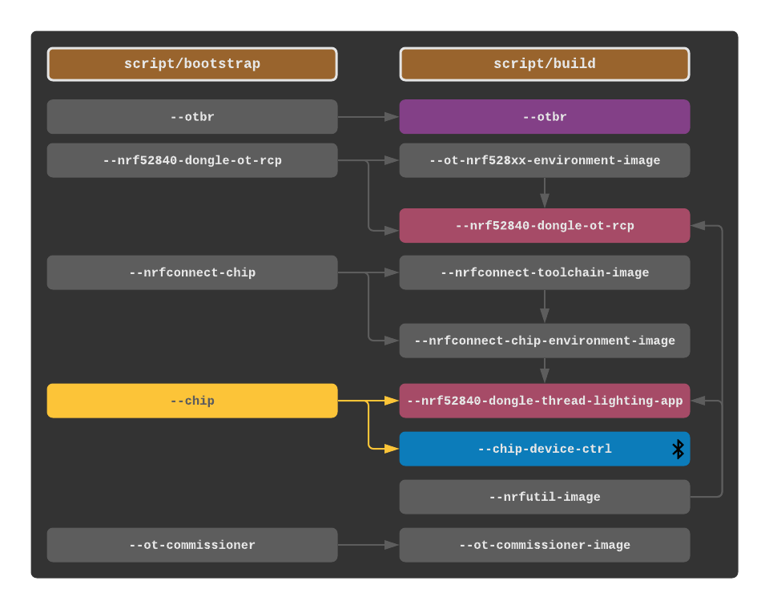

Bootstrap / Setup Usage Guide
The bootstrap and setup scripts follow GitHub’s Scripts to Rule Them All convention. Both include a help menu which prints available dependency/artifact flags.
script/bootstrap -h
script/setup -h
It is not always necessary to rebuild the entire dependency chain to rebuild a specific artifact. For instance, rebuilding the thread lighting app should not require rebuilding the build-tool container images.
# example: only rebuild chip-device-ctrl and thread-lighting-app from the latest version of CHIP script/bootstrap --chip script/setup --nrf52840-dongle-thread-lighting-app --chip-device-ctrl
Direct downloads are also available for container images and various build artifacts. The following dependency graph specifies the prerequisites for each artifact.
